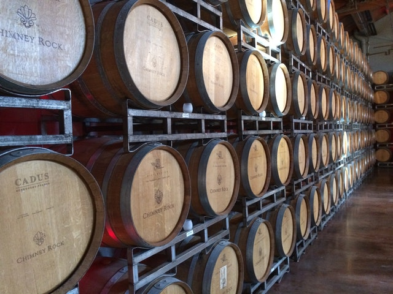

Quinta da Casa Amarela has opened its doors to all visitors in 1996, when
the Port Wine Route was launched. Since the beginning, our aim has always
been to provide creative and innovative offers with a playful and
educational nature that would lead wine tourists to discover and enrich
their culture about wine. Thus, all visits and tastings are varied and
integrated in a welcoming and familiar environment.
“Quinta da Casa Amarela” was awarded nationally with the “Enotourism of
the Year” award for excellence, awarded by Revista de Vinhos in 2006.

Typologies of visits and wine tasting:
“Discover and feel” – Port Wine with Chocolate.
”Discovering your wine profile “ – From the most elegant and fruity to
the most complex and structured.
“Tasting the classics wines” -Tinto Selection, Tinto Reserva, Tawny
Porto 10 anos.
“ InnovationTasting “ – Learn and discover 3 great white wines.
“The Douro and its Nectars” – Premium tasting of the Quinta’s greatest
wines.Tinto Reserva, Tinto Grande Reserva, Laura, Porto Vintage
These are some of the proposals to choose from, always in harmony with
small gastronomic notes linked to the identity of the region.
The Quinta also serves regional cuisine meals for groups.
All visits, both individual and in groups, are subject to reservation.